5 Designing with SystemVerilog
Designing with SystemVerilog
5.1 Goal for this week
- Tell the two styles of hardware description apart: behavioral and structural
- Describe sequential logic with
always_ff: flip-flops, resets, registers with an enable, and counters - Know what a latch is, and write code that cannot produce one by accident
- Describe combinational logic with
always_comb: multiplexers and decoders - Explain the difference between
=and<=, and why each block uses one of them - Assemble a design from smaller modules, and test it with a testbench
5.2 Two styles of design
There are two ways to describe a piece of hardware in SystemVerilog, and a real design uses both.
In behavioral design we describe what a block does: its outputs as a function of its inputs and, for sequential logic, of its stored state. We write that with assign and with always blocks, and leave it to the synthesis tool to pick the gates and flip-flops. In structural design we describe how a block is composed of other blocks: we create instances of smaller modules and connect their ports with wires, much as one would wire chips on a board.
| Behavioral | Structural | |
|---|---|---|
| Describes | what a block does | how it is built from other blocks |
| Written with | assign, always_* |
module instances |
| Example | a register, a multiplexer | a pipeline stage |
The two styles meet at the leaf cells. In the HIPV SoC that we use as a running example, the folder rtl/generic holds small, reusable cells (flopenr, mux2, mux3, adder) written in behavioral style, and the larger modules of the processor instantiate them structurally. This chapter begins with the behavioral style, because those leaf cells have to be written before they can be assembled, and ends with the structural style.
5.3 The always block
The previous chapter described logic one line at a time with assign. That is enough for an adder, but awkward the moment a function needs an if or a case. For those we use an always block: a block of statements that describes how a set of outputs depends on a set of inputs.
SystemVerilog has three kinds of always block for hardware, and which one you use is dictated by what you are building:
| Block | Describes | Runs when |
|---|---|---|
always_comb |
combinational logic | any signal it reads changes |
always_ff @(posedge clk) |
flip-flops | the clock edge |
always_latch |
latches | any of its inputs changes |
The names are a promise to the tool: if the code inside does not describe the kind of hardware the block name claims, the tool reports it. Older Verilog has a single always @(...) for all three purposes, and a whole class of bugs came from getting it wrong without any warning.
Two facts about always blocks are worth keeping in mind from the start. First, every always block in a module is a separate piece of hardware that exists all the time, like an assign, so they all run concurrently and the order in which you write them does not matter. Second, the statements inside one block run in the order written, like a small program. A block is a description of hardware, not a function that gets called.
5.4 Sequential logic: describe the hardware you want
Hardware description is not programming, and the habit that separates the two is this: decide on the hardware first, then write the code that describes it. If you cannot sketch the flip-flops and gates you expect, you are not ready to write the always block, and the synthesis tool will build something, but not necessarily what you meant.
So for every circuit in this chapter we follow the same four steps. First, the hardware we want. Second, its waveform, which says what the circuit must do over time and is the most precise specification there is. Third, the code that describes it. Fourth, a walk through the waveform to check that the code matches it. Learning to read waveforms is half of the work: it is also how you will debug in simulation.
A convention for all the diagrams in this chapter: the clock rises at the start of each numbered column, and input signals change in the middle of a column, after the clock has fallen. That way an input never changes at the same instant as a rising edge, and it is always clear which value the circuit sampled.
5.5 The D flip-flop
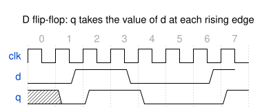
q takes the value of d at each rising clock edge.
The flip-flop is the memory element of synchronous design. It has a data input d, a clock clk and an output q. At every rising edge of the clock it copies d to q, and between edges it holds that value no matter what d does (Figure 5.1).
Follow the waveform from left to right. In column 0, q is unknown (the hatched area): nothing has been stored yet. At the rising edge that starts column 1, d is 0, so q becomes 0. In the middle of column 1, d rises, and q does not react: the flip-flop is not looking. At the next rising edge, starting column 2, it samples d = 1 and q rises. The same happens in reverse when d falls in the middle of column 3: q falls only at the edge that starts column 4. A flip-flop is a circuit that looks at its input at one instant per cycle.
The code is as short as the circuit:
module dff (
input logic clk, d,
output logic q
);
always_ff @(posedge clk) begin
q <= d;
end
endmoduleThe sensitivity list @(posedge clk) names the event that makes the block run, and the block runs only then. Between clock edges nothing happens and q keeps its value: that holding is the memory. The operator is <=, the non-blocking assignment, which we explain at the end of the chapter; for now, remember that it goes with always_ff.
5.6 The latch
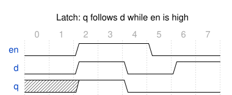
q follows d while en is high, and holds its value while en is low.
A latch is a memory element too, but it looks at its input for a whole level, not at one instant. While the enable en is high, the latch is transparent: q follows d continuously. When en falls, the latch closes and q holds the last value (Figure 5.2).
In the waveform, en is high during columns 2 to 4. As soon as it rises, q takes the value of d, which is 1. When d falls at the start of column 4, q falls with it, because the latch is still open. en falls at the start of column 5, and from then on q stays 0: when d rises again in column 6, the latch is closed and does not notice. Compare this with the flip-flop of the previous waveform, where q could only change at a clock edge.
always_latch begin
if (en) q <= d;
endA latch has no clock edge, so a signal passing through it can ripple along for as long as en is high, which makes timing analysis difficult. In a synchronous design we want flip-flops everywhere, and we use a latch only on purpose. The reason to know it exists is that it is easy to build one by accident, and the section on combinational logic below shows how.
5.7 Adding a reset
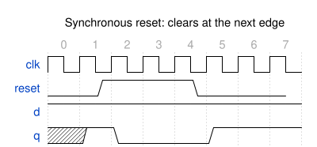
q clears at the next rising edge after reset rises.
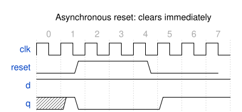
q clears the moment reset rises, without waiting for a clock edge.
A flip-flop that powers up with an unknown value is a bug waiting to happen, so registers get a reset that forces a known value. There are two ways to write it, and both clear q when reset is high. They differ in when the clear takes effect.
With a synchronous reset (Figure 5.3), reset is just another input that the flip-flop looks at on the clock edge. In the waveform d stays 1. q becomes 1 at the edge that starts column 1. reset rises in the middle of column 1 and q does not move; only at the edge starting column 2 does the flip-flop see reset high and clear. It stays cleared through the edges of columns 3 and 4 because reset is still high. reset falls in the middle of column 4, and at the edge starting column 5 the flip-flop loads d again.
always_ff @(posedge clk) begin
if (reset) q <= 1'b0;
else q <= d;
endWith an asynchronous reset (Figure 5.4), the flip-flop reacts to reset itself, whatever the clock is doing. The same stimulus now clears q in the middle of column 1, the instant reset rises, not at the next edge. It stays 0 while reset is high, and after reset falls it waits for the next edge, at the start of column 5, to load d.
always_ff @(posedge clk or posedge reset) begin
if (reset) q <= 1'b0;
else q <= d;
endThis is why reset appears in the sensitivity list next to posedge clk: the block must also run when reset rises. An asynchronous reset needs a flip-flop with a dedicated reset pin, and its release matters: if reset falls too close to a clock edge the flip-flop can misbehave, a problem we return to when we discuss synchronizers. A synchronous reset needs a running clock, but is just logic in front of the D input (or a dedicated set/reset input on an FPGA flip-flop, like the one in the slice of the previous chapter).
The HIPV SoC chooses one style for the whole design: its coding standard requires a synchronous reset throughout. That is the style we use from now on. Pick one style, use it everywhere, and know which one you picked.
5.8 Registers and the enable signal
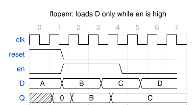
flopenr: after the reset, Q loads D only at the edges where en is high.
A single flip-flop stores one bit. A register is a group of flip-flops that load together, and in a processor most registers also need an enable: a signal that says “load a new value at this edge”, and otherwise “keep the old one”. A pipeline register that must hold its contents while the stage ahead is busy is exactly that. This is the most-instantiated cell in HIPV:
module flopenr #(parameter WIDTH = 8) (
input logic clk, reset, en,
input logic [WIDTH-1:0] D,
output logic [WIDTH-1:0] Q);
always_ff @(posedge clk)
if (reset) Q <= '0;
else if (en) Q <= D;
endmoduleThe module is the D flip-flop with a synchronous reset, plus one more condition. WIDTH is a parameter, so the same description serves for a 1-bit flag and for the 32-bit program counter. The priority is spelled out by the if/else if chain: reset wins, then enable, and if neither is active there is no assignment at all, so the register keeps its value. That “no assignment means hold” is legal inside always_ff, since a flip-flop naturally remembers; it is the opposite of the rule for always_comb, where it would build a latch.
Figure 5.5 shows the behavior. reset is high around the first edge, so at the start of column 1 Q loads 0. D carries the values A, B, C, D, changing mid-column. en is high for the edges starting columns 2, 3 and 4. At column 2 the register loads B. At column 3 D is still B, so Q stays B. At column 4 D is C, so Q loads C. Then en falls in the middle of column 4, and from the edge at column 5 on the register ignores D, even though D keeps changing: Q holds C. Figure 5.6 is what the synthesis tool builds: one flip-flop cell with clock, data, enable and synchronous reset inputs, which is what an FPGA slice flip-flop provides directly (the clock-enable and set/reset inputs of the previous chapter).
flopenr module (8-bit by default), drawn by Yosys from the real HIPV file. $sdffe is a flip-flop with synchronous reset and enable.
5.9 Counters: two ways to write one
A counter is a register whose next value is its own current value plus one. Its waveform is the simplest of any sequential circuit: after the reset, the output goes up by one at every clock edge (Figure 5.7). There are two common ways to write it, and the best habit is to know both.
Way 1: everything in one always_ff. The straightforward form says, at each edge, “if reset, clear; otherwise count <= count + 1”:
module counter4 (
input logic clk,
input logic reset,
output logic [3:0] count
);
always_ff @(posedge clk) begin
if (reset) count <= 4'b0000;
else count <= count + 1;
end
endmodule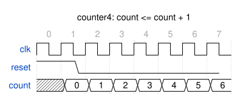
counter4: after the reset, count increases by one at every rising edge.
At the edge starting column 1, reset is still high and count loads 0. From then on reset is low, and at each edge count takes its own value plus one: 1, 2, 3 and so on. When it reaches 15, the next + 1 wraps around to 0, because the result is truncated to 4 bits.
Way 2: next-state logic and a register. The second form splits the description in two. A combinational block computes what the next value would be, count_next, and a plain register stores it:
module counter4_next (
input logic clk,
input logic reset,
output logic [3:0] count
);
logic [3:0] count_next;
always_comb begin
count_next = count + 1;
end
always_ff @(posedge clk) begin
if (reset) count <= 4'b0000;
else count <= count_next;
end
endmodule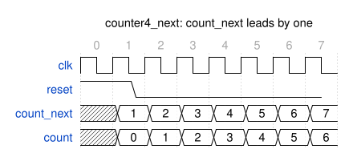
counter4_next: count_next is always one ahead of count, and the register copies it at each edge.
The waveform now has one more signal (Figure 5.8). count_next is combinational, so it changes as soon as count does, and is always one higher. In column 1, count is 0 and count_next is already 1, but the register ignores it at the edge starting column 1 because reset is high. At the edge starting column 2 the register copies the 1, and so on.
Both modules synthesize to exactly the same hardware: an adder, a register with a synchronous reset, and the feedback wire (Figure 5.9).
reset drives the synchronous reset input.
So why bother with the second form? Because it separates two questions: what is the next value? (combinational logic) and when do we store it? (the register). For a counter the answer to the first is trivial, and way 1 is perfectly fine. For anything bigger, such as a state machine (see the next chapter) or a pipeline stage, the next-state logic can be dozens of lines of if and case, and keeping it out of the clocked block makes it far easier to read and to check. The HIPV SoC uses this idea in its 64-bit timer counter, cntr, which computes plus_one = count + 1 with an assign and feeds it to a register cell with an enable and a clear, instead of writing the increment inside the clocked block.
5.10 Combinational logic
We now do the same for combinational circuits. The method is identical: hardware, waveform, code, walk through. The difference is in the waveform: there is no clock, because a combinational output depends only on the current inputs, so it changes as soon as an input does.
The block for it is always_comb. It re-evaluates whenever any signal it reads changes. It is closer to a spreadsheet formula that recalculates on every input edit than to a function you call. You write no sensitivity list, since the tool works it out from the signals the block reads. The assignment inside is the blocking =, which reads as “this is what the output equals right now”. There is no state to remember, which gives one rule that matters more than any other: every output must be assigned on every path through the block.
5.11 The multiplexer
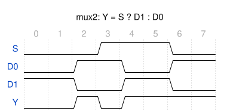
Y follows D0 while S is 0 and D1 while S is 1, with no clock.
A multiplexer selects one of several inputs. The 2-to-1 version is the first cell in rtl/generic, and HIPV writes it as a continuous assignment:
module mux2 #(parameter WIDTH = 8) (
input logic [WIDTH-1:0] D0, D1,
input logic S,
output logic [WIDTH-1:0] Y);
assign Y = S ? D1 : D0;
endmoduleFigure 5.10 shows what it does. There is no clock: Y equals D0 while S is 0 and D1 while S is 1, and it changes the moment the selected input or the select changes. At the start of column 2 D0 rises, and since S is 0, so does Y. At the start of column 3 S rises, Y switches over to D1, which is 0, and falls. At column 4 D1 rises, Y follows. At column 6 S falls and Y returns to D0, which is 1.
The same multiplexer in an always_comb block reads like this:
always_comb begin
if (S) Y = D1;
else Y = D0;
endBoth give the same circuit. The assign form is shorter for one line of logic; the always_comb form is better when there are several outputs or several conditions. For a multiplexer with more than two inputs, the case statement is clearer than a chain of ?: operators. HIPV’s 3-to-1 multiplexer, written with a chain of conditional operators in the repository, looks like this as an always_comb with case:
module mux3 #(parameter WIDTH = 8) (
input logic [WIDTH-1:0] D0, D1, D2,
input logic [1:0] S,
output logic [WIDTH-1:0] Y);
always_comb begin
case (S)
2'b01: Y = D1;
2'b10: Y = D2;
default: Y = D0; // 2'b00, and 2'b11 falls back to D0
endcase
end
endmoduleThe case compares S against each listed value and runs the matching branch. The default branch is not optional: it makes sure Y is assigned for every value of S, including the one the designer never intended to use (2'b11), and values containing X or Z in simulation. The synthesized circuit (Figure 5.11) is two comparators and two 2-to-1 multiplexers in series.
mux3 cell as drawn by Yosys from the HIPV file: S == 2'b10 selects D2, otherwise S == 2'b01 selects D1, otherwise D0.
5.12 The decoder
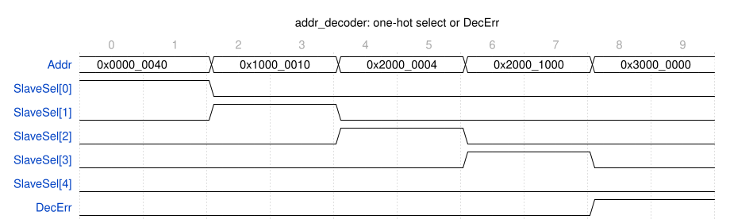
SlaveSel bit goes high for each mapped region, and DecErr goes high for an unmapped address.
A decoder turns an encoded value into a set of separate control signals, and it is everywhere in a processor: the instruction decoder turns an opcode into control signals, and the bus decoder turns an address into “which device is being accessed”. The second one is a clean example. The HIPV crossbar has five slaves (instruction memory, data memory, UART, timer and GPIO), each mapped to a region of the address space, and the decoder produces a one-hot select, one bit per slave, plus an error flag for an address that belongs to no slave. Here it is with the address map written out:
module addr_decoder (
input logic [31:0] Addr,
output logic [4:0] SlaveSel,
output logic DecErr
);
always_comb begin
SlaveSel = '0; // default: nothing selected
if (Addr[31:16] == 16'h0000) SlaveSel[0] = 1'b1; // instruction memory, 64 KiB
if (Addr[31:16] == 16'h1000) SlaveSel[1] = 1'b1; // data memory, 64 KiB
if (Addr[31:12] == 20'h20000) SlaveSel[2] = 1'b1; // UART, 4 KiB
if (Addr[31:12] == 20'h20001) SlaveSel[3] = 1'b1; // timer, 4 KiB
if (Addr[31:12] == 20'h20002) SlaveSel[4] = 1'b1; // GPIO, 4 KiB
end
assign DecErr = ~|SlaveSel;
endmoduleRead the waveform first (Figure 5.12). Five addresses arrive one after another, two columns each. The first, 0x0000_0040, lies in the instruction-memory region, so SlaveSel[0] goes high. The next addresses hit data memory, the UART and the timer in turn, and each raises exactly one select. The last, 0x3000_0000, matches no region: every select stays low, so DecErr rises. Only one select is ever high, because the regions do not overlap.
Now the code. The first statement in the block is the important one: SlaveSel = '0 assigns the default, every bit low, before anything else. Each if then overrides one bit. Because every bit of SlaveSel has a value on every path, whatever the address, the block cannot build a latch, and none of the ifs needs an else. This default first, then override pattern is the safest way to write always_comb, and you will see it throughout HIPV. The last line uses the reduction operator from the previous chapter: ~|SlaveSel is true when no select bit is set.
(The real obi_decoder in the HIPV repository is the same block, with the base addresses and sizes taken from a shared package, so that adding a slave changes one file.)
5.13 Avoiding latches
The decoder showed the right way. Here is the wrong way:
always_comb begin
if (sel) y = in1;
endWhen sel is 0, no branch assigns y. In a spreadsheet an unhandled case would show a blank cell, but in hardware an output cannot go blank. If no branch assigns it, the only way to keep it at some value is to remember the previous one, so the tool builds a latch, the element from earlier in this chapter (Figure 5.13). It adds a storage element you did not intend, it complicates timing analysis, and it is the most common bug in always_comb. Tools warn about it, which is the reason to use always_comb instead of the old always @(*).
if: a latch whose enable is sel, so y holds its old value whenever sel is 0.
There are three ways to follow the rule. Give every output a default at the top of the block, as the decoder does. Or write an else on every if. Or give every case a default branch, as in mux3. Sequential blocks are different: inside always_ff, a missing assignment simply means “keep the value”, which is what a flip-flop does anyway.
5.14 Blocking vs. non-blocking assignment
We have used two assignment operators in an always block, and the pairing has been the same every time: = in always_comb, and <= in always_ff. Now we can see why.
A blocking assignment, =, takes effect immediately: the next statement in the block sees the new value. A non-blocking assignment, <=, only schedules the update, which lands at the end of the current time step: the next statement still sees the old value. The difference only shows when there is interdependency, when a later statement reads something an earlier one wrote.
5.14.1 In combinational logic
Take three inputs and the function s = c ^ (a ^ b), written with an intermediate signal, once with each operator:
module xor_gate (
input logic a, b, c,
output logic s1, s2
);
logic n1, n2;
// case 1: blocking
always_comb begin
n1 = a ^ b;
s1 = c ^ n1;
end
// case 2: non-blocking
always_comb begin
n2 <= a ^ b;
s2 <= c ^ n2;
end
endmodule(Some tools refuse non-blocking assignments inside always_comb altogether; the example is written this way only to show what would happen.)
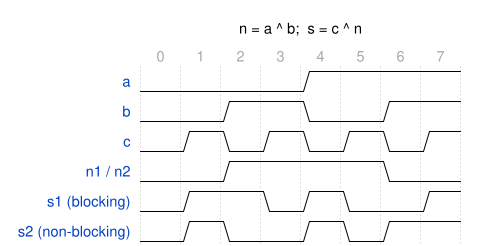
s1 always matches c ^ n1, while s2 is computed from the previous value of n2.
Figure 5.14 shows the result for the same inputs. In case 1, n1 updates immediately, and the next line uses the new n1, so s1 is always c ^ n1. In case 2, n2 is only scheduled to change, so s2 <= c ^ n2 reads the previous n2. Compare the last two rows: n changes at the start of columns 2 and 6, and at exactly those two points s2 differs from s1, because it still uses the old n. Case 1 models a combinational circuit; case 2 does not, because its output depends on a stale value. Synthesis tools often ignore the distinction in combinational blocks and build the right gates anyway, which makes it worse: the simulation shows one behavior and the hardware has another, a simulation/synthesis mismatch, the kind of bug that is hardest to find.
5.14.2 In sequential logic
The same experiment on two registers in a chain:
module chain (
input logic clk, a,
output logic f1, f2
);
logic b1, b2;
// case 1: blocking
always_ff @(posedge clk) begin
b1 = a;
f1 = b1;
end
// case 2: non-blocking
always_ff @(posedge clk) begin
b2 <= a;
f2 <= b2;
end
endmodule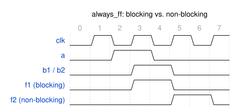
f1 follows b1 in the same cycle, with non-blocking assignment f2 lags by one more clock.
In Figure 5.15 the clock is drawn with two columns per period, so it rises at the start of columns 1, 3, 5 and 7. The input a is high during columns 2 and 3, so the edge at the start of column 3 is the one that sees it. In case 1, b1 = a happens first, and f1 = b1 then reads the new b1, so f1 gets the value of a in the same cycle: both change at the edge starting column 3, and the second register adds nothing. In case 2, b2 <= a and f2 <= b2 are both evaluated before either update lands, so f2 takes the value b2 had before this edge. b2 rises at column 3, but f2 only at the next edge, at column 5, and it falls one edge after b2 does, at column 7. That is a two-stage chain, which is what two registers in a row should be. This is the behavior every pipeline relies on, and it is why the swap a <= b; b <= a; works with <= and silently fails with =.
5.14.3 The rule
Blocking = |
Non-blocking <= |
|
|---|---|---|
| Update takes effect | immediately | at the end of the time step |
| The next statement reads | the new value | the old value |
| Use in | always_comb |
always_ff |
= for combinational logic, <= for clocked logic, every time. Do not mix the two in one block.
5.15 Structural design: module instances
Behavioral modeling describes what a block does. Structural modeling describes a block by how it is composed of simpler modules. Each copy of a smaller module is an instance, and it has a unique name. Here is the smallest useful example, a 4:1 multiplexer assembled from three copies of a 2:1 multiplexer:
module mux2to1 (
input logic a, b, sel,
output logic y
);
assign y = sel ? b : a;
endmodule
module mux4to1_struct (
input logic [3:0] d,
input logic [1:0] sel,
output logic y
);
logic y0, y1; // wires between the instances
mux2to1 mux_low (.a(d[0]), .b(d[1]), .sel(sel[0]), .y(y0));
mux2to1 mux_high (.a(d[2]), .b(d[3]), .sel(sel[0]), .y(y1));
mux2to1 mux_final (.a(y0), .b(y1), .sel(sel[1]), .y(y));
endmoduleAn instantiation has three parts. First comes the module name (mux2to1), then the instance name you choose (mux_final), then in parentheses the port connections. The notation .a(y0) reads “the module’s port a is connected to my signal y0”. These connections by name make the code easy to read and safe to reorder. There is also a positional form, mux2to1 mux_final (y0, y1, sel[1], y);, which is shorter and fails silently if someone later reorders the ports, so we avoid it. Figure 5.16 shows the result: the tool leaves the three instances as boxes, exactly as the hierarchy appears in the code.
mux4to1_struct: two instances select within a pair, and a third selects between the two results.
5.15.1 Parameters
A parameter makes a module configurable, which is how one description serves every width. We have been using this all along: flopenr declares parameter WIDTH = 8, and each instance picks its own. The override goes between the module name and the instance name, after a #:
flopenr #(32) pcreg (...); // a 32-bit instance, by position
flopenr #(.WIDTH(32)) pcreg (...); // the same, by nameThe by-name form is safer when a module has several parameters. A localparam is a constant inside a module that, unlike a parameter, cannot be overridden from outside, which makes it the right choice for derived constants.
5.15.2 A real example: the program counter of HIPV
HIPV’s fetch unit is almost entirely structural. Its program-counter loop is built from three of the leaf cells we wrote above. The code is the actual instantiation, reduced to this loop:
module pc_unit (
input logic clk, reset,
input logic PCEnF,
input logic PCSrcE,
input logic [31:0] PCTargetE,
output logic [31:0] PCF
);
logic [31:0] PCNextF, PCPlus4F;
// next PC selection: sequential or redirect from Execute
mux2 #(32) pcmux (
.D0(PCPlus4F), .D1(PCTargetE), .S(PCSrcE), .Y(PCNextF));
// PC register
flopenr #(32) pcreg (
.clk(clk), .reset(reset), .en(PCEnF), .D(PCNextF), .Q(PCF));
// sequential PC
adder #(32) pcadd4 (
.A(PCF), .B(32'd4), .Y(PCPlus4F));
endmoduleEverything inside the parentheses is a wire name, and nothing here describes any behavior: it only says which cell goes where. The register holds the PC, the adder computes PC + 4, and the multiplexer chooses between that and a branch target (Figure 5.17). Note how the signals form a loop through the register, which is the only place where the loop is broken by a clock.
$sdffe register, the +4 adder, and the next-PC multiplexer.
5.16 Testbenches
A testbench is a module that tests another module, the device under test (DUT). It applies inputs to the DUT and, ideally, checks that the outputs are right. Its inputs and the expected outputs are the test vectors. A testbench has no ports of its own: it sits at the top of the simulation, so everything it needs is declared inside as plain logic signals and wired to the DUT by name, like any other instance.
module tb_mux4to1;
logic [3:0] d;
logic [1:0] sel;
logic y;
mux4to1_struct dut (.d(d), .sel(sel), .y(y));
initial begin
d = 4'b1010;
for (int i = 0; i < 4; i++) begin
sel = i[1:0];
#10;
$display("d=%b sel=%b y=%b", d, sel, y);
if (y !== d[sel]) $error("sel=%b: expected %b, got %b", sel, d[sel], y);
end
$finish;
end
endmoduleEverything happens in the initial block, which starts at time zero and runs once. It holds d fixed and sweeps sel through all four values. After each change it waits #10 time units, $display prints the inputs and the output, and the if checks y against the bit of d that sel selects. The #10 delay is not needed by the circuit, since a combinational output settles almost instantly. It gives each test case its own slice of simulation time, so the printed lines and the waveform stay readable. The comparison uses !==, which also catches an X on the output where != would stay silent. $finish ends the simulation.
These statements (initial, #10, $display, $finish) exist only in simulation. A synthesizer has no hardware for “wait 10 time units”, which is the line between the code you simulate and the code you synthesize.
5.17 Testbench for a sequential design
A registered design only changes on a clock edge, so the testbench has to supply that clock; nothing else in the simulation will. Here it is for the counter of this chapter:
module tb_counter;
logic clk = 0;
logic reset = 1;
logic [3:0] count;
counter4 dut (.clk(clk), .reset(reset), .count(count));
always #5 clk = ~clk; // clock generator: period of 10 units
initial begin
#12 reset = 0; // release reset between clock edges
#100;
$display("count=%0d", count);
$finish;
end
endmoduleThe separate always #5 clk = ~clk; has no sensitivity list and no guard, so it keeps re-executing for the whole simulation and flips clk every 5 time units. That gives a free-running clock with a period of 10. It runs concurrently with the initial block below it: every initial and always block in a module starts at time zero and proceeds independently, which is why the clock generator lives in its own block.
The stimulus holds reset high for the first clock edge (at time 5), then releases it at time 12, between edges, so that no input changes exactly when the clock rises, the same convention as in our waveforms. After the remaining ten rising edges the counter holds 10, which $display prints. The key difference from the combinational testbench is the waiting. A combinational output is valid almost immediately after its inputs change, but a register updates only once per clock edge, so a sequential testbench must always budget enough simulated time, or wait for a specific number of @(posedge clk) events, before checking the outputs.
$finish matters even more here. The clock generator never terminates on its own, so without an explicit $finish the simulation would run forever.
5.18 Running a simulation
Any SystemVerilog simulator can run these testbenches. With the open-source Icarus Verilog, you compile the design together with its testbench and run the result:
iverilog -g2012 -o sim_counter counter4.sv tb_counter.sv
vvp sim_counterThe -g2012 option selects the SystemVerilog language level. To look at waveforms instead of printed lines, add two statements at the start of the initial block, and open the resulting file in GTKWave:
$dumpfile("tb_counter.vcd");
$dumpvars(0, tb_counter);The waveforms you get are the same kind as the ones drawn in this chapter, and reading them is the same skill. Checking results by eye does not scale beyond a handful of signals, though. A testbench that compares outputs against expected values, as ours does with $error, can be run again after every change and report a clear pass or fail. Later in the course we move this idea to a Python framework, cocotb, which makes writing such checks much easier.
5.19 From design to the pipeline
Everything introduced here is the working vocabulary of the rest of the course. always_ff with non-blocking assignment and a synchronous reset is how every pipeline register is built, through flopenr and its siblings. always_comb with a default at the top is how the ALU and the decoders avoid latch inference. Instances and parameters are how those cells are assembled into stages, and stages into a processor. The pipeline chapters introduce no new syntax: they put these constructs to work on a larger example.